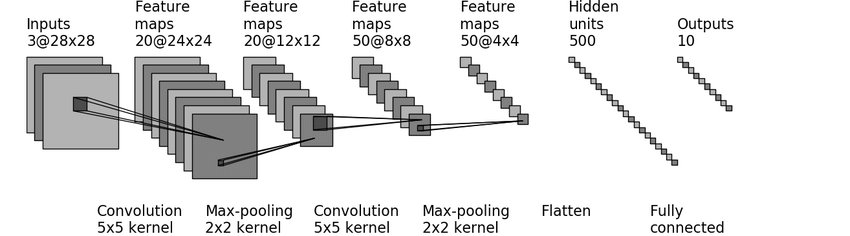
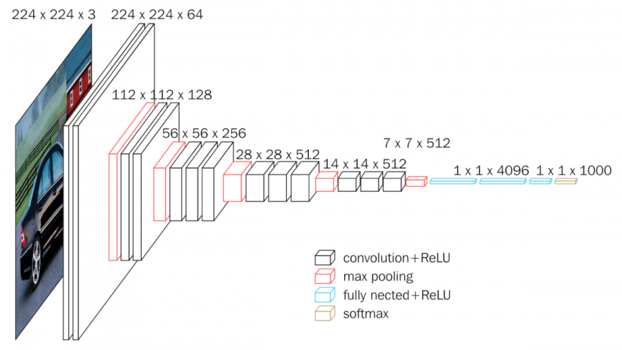
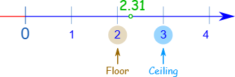

初识Pytorch(二) -- 神经网络搭建
/110119t32pt.jpg)
初识Pytorch(二) -- 神经网络搭建
yeximm1 神经网络基本骨架
pytorch关于神经网络的工具主要在torch.nn中（Neural Network）
官网文档：https://docs.pytorch.org/docs/stable/nn.html
Containers # 主要给神经网络定义了一些骨架（结构），往结构中添加不同的内容就可以组成神经网络
Convolution Layers # 卷积层
Pooling layers # 池化层
Padding Layers # 填充层
Non-linear Activations (weighted sum, nonlinearity) # 非线性激活
Non-linear Activations (other)
Normalization Layers # 标准化（归一化）层
…
1.1 骨架 Containers
Containers包含6个模块，Module是最常用的模块，给所有神经网络提供一个基本的骨架
| Module | Base class for all neural network modules. |
|---|---|
| Sequential | A sequential container. |
| ModuleList | Holds submodules in a list. |
| ModuleDict | Holds submodules in a dictionary. |
| ParameterList | Holds parameters in a list. |
| ParameterDict | Holds parameters in a dictionary. |
1.1.1 Module的使用
1 | import torch |
1.1.2 模型搭建 Sequential
按照顺序执行pytorch模型中的各项功能。
1 | # Using Sequential to create a small model. When `model` is run, |
以 CIFAR 10 的结构为例

不使用 Sequential ，神经网络模型结构过程
1 | from torch import nn |
使用 Sequential 组建神经网络模型
1 | from torch import nn |
使用 tensotboard 可视化模型架构
1 | from torch.utils.tensorboard import SummaryWriter |
1.2 卷积层 Convolution Layers
torch.nn是对torch.nn.functional的一个封装
nn.Conv1d表示一维，nn.Conv2d表示二维（图片是2D），nn.Conv3d表示三维
卷积操作可视化：https://github.com/vdumoulin/conv_arithmetic/blob/master/README.md
1.2.1 nn.functional.conv2d
torch.nn.functional.conv2d用法，注意数据要使用tensor格式！！
1 | torch.nn.functional.conv2d( |
- input 输入，形状要求 (minibatch,in_channels,iH,iW)
- weight 权重 / 卷积核，形状要求 (out_channels,in_channelsgroups,kH,kW)
- bias 偏置，形状要求 (out_channels)(out_channels)，默认值：None
- stride 步长，卷积核每次移动步长，2d卷积中要求长宽，可以是单个数字或一个元组 (sH, sW)，默认是1
- padding
填充，在输入图像的左右两边进行填充，padding决定填充多大范围，可以是单个数字或一个元组
(padH, padW)，默认是0（不填充）
- 如果不填充白边，那么边缘的图像特征就会缺失
示例代码
1 | import torch |
1.2.2 nn.Conv2d
1 | torch.nn.Conv2d( |
- in_channels (int) – 输入图像中的通道数
- out_channels (int) – 卷积后输出的通道数
- kernel_size (int or tuple) – 卷积核的大小，一个数字时为n*n大小的卷积核，不规则核设置为 (行, 宽)
- stride (int or tuple, optional) – 卷积的步长，2d卷积中要求长宽，可以是单个数字或一个元组 (sH, sW)，默认是1
- padding (int, tuple or str, optional) – 在输入的四个边上添加填充，padding决定填充多大范围，默认是0（不填充）
- padding_mode (str, optional) –选择padding填充的时候，按什么模式进行填充 ‘zeros’, ‘reflect’, ‘replicate’ or ‘circular’. 默认: ‘zeros’
- dilation (int or tuple, optional) – 内核元素之间的间距，默认是1
- groups (int, optional) – 从输入通道到输出通道的阻塞连接数，默认是1
- bias (bool, optional) – 为True时向输出添加可学习的偏差，默认True
代码实例
1 | import torch |
卷积层说明，如下图所示。
输入图像是 224 x 224 x 3，经过一个卷积和非线性激活后，变成 224 x 224 x 64
输出层的高宽计算公式见pytorch官方文档：https://docs.pytorch.org/docs/stable/generated/torch.nn.Conv2d.html#torch.nn.Conv2d

1.3 池化层 Pooling layers
最大池化（MaxPool）也称为下采样，上采样（MaxUnpool），平均池化（AvgPool），自适应的最大池化（AdaptiveMaxPool）
1.3.1 nn.MaxPool2d
1 | torch.nn.MaxPool2d( |
- kernel_size (Union[int, tuple[int, int]]) – 设置用来取最大值的窗口尺寸，类似卷积核，设置为3的时候会生成一个3*3的窗口
- stride (Union[int, tuple[int, int]]) – 窗口的步长，默认为kernel_size
- padding (Union[int, tuple[int, int]]) – 在两侧添加填充
- dilation (Union[int, tuple[int, int]]) – 窗口中各元素之间的步长
- return_indices (bool) – 为True时返回最大索引和输出，用于 torch.nn.MaxUnpool2d 之后
- ceil_mode (bool)
– 为True时使用 ceil 而不是 floor
来计算输出形状，ceil对缺失信息部分也进行上采样，floor会对缺失信息部分进行舍弃
- floor向下取整，ceil向上取整，如下图所示 
实例代码
1 | import torch |
1.3.2 最大池化作用
最大池化的目的是保留输入的特征，同时把数据量减小
通过tensorboard可视化最大池化效果
1 | import torchvision |
1.4 非线性激活 Non-linear Activations
非线性激活主要为了给神经网络引入非线性的特征，常见的有：
1.4.1 ReLU函数
pytorch文档地址：https://docs.pytorch.org/docs/stable/generated/torch.nn.ReLU.html#torch.nn.ReLU
1 | torch.nn.ReLU(inplace=False) |
- inplace为True时，会将输入内存地址的数据直接改变，就是原地操作，无需返回值
- inplace为False时，保留原始数据，需要采用返回值的形式接收改变后的数据
实例代码
1 | import torch |
1.4.2 Sigmoid函数
pytorch文档地址：https://docs.pytorch.org/docs/stable/generated/torch.nn.Sigmoid.html#torch.nn.Sigmoid
1 | torch.nn.Sigmoid(*args, **kwargs) |
使用tensorboard可视化结果
1 | from torch.utils.tensorboard import SummaryWriter |
1.5 损失函数 Loss Functions
- 计算实际输出和目标之间的差距
- 为更新输出提供一定的依据（反向传播）
pytorch文档地址：https://docs.pytorch.org/docs/stable/nn.html#loss-functions
1.5.1 L1Loss函数
1 | torch.nn.L1Loss( |
- size_average (bool, optional) – 已弃用（请参阅reduction）。默认情况下，损失按批次中的每个损失元素进行平均。请注意，对于某些损失，每个样本都有多个元素。如果字段size_maverage设置为False，则将每个小批量的损失相加。当reduce为False时忽略。默认值：True
- reduce (bool, optional) – 已弃用（参见reduce）。默认情况下，根据size_maverage，对每个小批量的观测值进行平均或求和。当reduce为False时，返回每个批处理元素的损失，并忽略size_maverage。默认值：True
- reduction (str, optional) – 指定要应用于输出的缩减：‘none’|‘表示’|‘和’。‘none’：不应用缩减，‘mean’：输出的总和将除以输出中的元素数量，‘sum’：输出将被求和。注意：size_maverage和reduce正在被弃用，同时，指定这两个参数中的任何一个都将覆盖reduce。默认值：‘mean’
实例代码
1 | import torch |
1.5.2 MSELoss函数
计算平方差函数
1 | torch.nn.MSELoss( |
实例代码
1 | import torch |
1.5.3 CrossEntropyLoss函数
交叉熵函数
1 | torch.nn.CrossEntropyLoss( |
实例代码
1 | x = torch.tensor([0.1, 0.2, 0.3], dtype=torch.float) # x有3类 |
2 反向传播 backward
使用 CrossEntropyLoss函数 实现反向传播计算
神经网络中每个节点（要更新的参数）都有一个梯度，根据梯度对参数进行优化，最终实现降低loss的目的
1 | from torch import nn |
.backward()
用来计算梯度，需要使用合适的优化器去更新参数，以达到整体的误差降低的目的
3 优化器 optim
pytorch文档地址：https://docs.pytorch.org/docs/stable/optim.html
- params 模型的参数
- lr 学习速率 learning rate
构造优化器
1 | optimizer = optim.SGD(model.parameters(), lr=0.01, momentum=0.9) |
首先在优化器中放入模型的参数，优化步骤如下
1 | for input, target in dataset: |
实例代码
1 | from torch import nn |
4 现有网络模型
pytorch文档地址：https://docs.pytorch.org/vision/stable/models.html
torchvision是关于图像相关的模型，torchaudio是关于语音相关的模型，torchtext是关于文字相关的模型…
4.1 VGG分类模型
常用的有VGG16、VGG19
1 | torchvision.models.vgg16( |
weights(VGG16_Weights, optional) – 使用已经下载好的的预训练权重，参阅 VGG16_Weights 。默认情况下，不使用预先训练的权重。progress(bool, optional) – 如果为True，则显示下载到stderr的进度条。默认值为True。**kwargs– 传递给torchvision.models.vgg.VGG的参数。 更多详细信息参阅 source code 。
4.2 查看VGG模型架构
1 | import torchvision |
VGG 模型架构
1 | VGG( |
4.3 修改网络模型
VGG模型通过ImageNet数据集训练，最终分类类别有1000个
CIFAR10数据集中只有10各类别的数据
如何利用现有的网络，去改动它的结构
在网络最后添加一个层级
1 | # 在模型末尾添加层级 |
修改某个层级参数
1 | # 调整classifier模块中第6层参数 |
5 模型保存与加载
5.1 保存模型结构(参数)
1 | import torchvision |
保存方式1，保存模型结构 + 模型参数
1 | torch.save(vgg16, 'vgg16_method1.pth') |
保存方式2，把模型的参数保存成字典（官方推荐）
1 | torch.save(vgg16.state_dict(), 'vgg16_method2.pth') |
5.2 模型加载
1 | import torch |
方式1 –> 保存方式1，加载模型
1 | model = torch.load('vgg16_method1.pth', weights_only=False) |
方式2 –> 保存方式2，加载模型
1 | vgg16 = torchvision.models.vgg16(weights=None) |